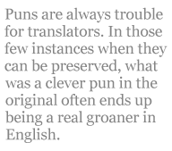
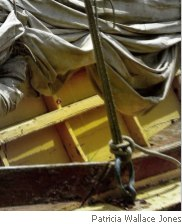

I am interested in the literary translation of poetry and I define it as translation which replicates both the content and the form of an original poem in English idiom. When readers buy a translation, they take for granted that it will reproduce the content of the original. However, I regard as “cribs” or “service translations” those translations which focus on content at the expense of form — a prose translation of Beowulf, for example. Such translations are useful, necessary even, but I do not expect much in the way of aesthetic pleasure from them. With literary translation, one attempts not just to get the meaning across but to provide the same sort of aesthetic pleasure which the original provides.
Even “literary” translators often neglect or make a half-hearted attempt to recreate the form of the original. Imagine, by way of example, that a Frenchman were to translate Pope’s Essay on Man into vers libre. It’s not just that half of Pope’s meaning would be lost with the form — the translation would end up meaning something quite different than the original. Rather than embodying the poet’s argument for an ordered and rational universe, a vers libre translation would set the form and the content at odds with one another, and the result would be self-contradictory — an interesting experiment but certainly nothing like what Mr Pope wrote. To do the Essay justice, the translator, whether he be French, Chinese or Aborigine, would have to find a way to replicate the effect of Pope’s rhyming couplets in his native idiom.In short, since form and content are both essential components, only the translator who finds an apt form in the host language can be said to have translated the whole poem.
In poem 4 Catullus draws on the traditions of funerary and dedicatory epigram but drags the “epigram” out to humorous length. A retired boat, like a geezer, rambles on and on, telling its whole life story. Catullus also attains a humorous disjunction between the humble nature of the boat and the artificial epic language used for its tale. Puns are always trouble for translators. In those few instances when they can be preserved, what was a clever pun in the original often ends up being a real groaner in English. As a means to personification, Catullus puns on words that apply both to a human and a tree and both to a human and a boat. In some instances I opted to keep the human half of the pun: for example, comata silva (a forest with hair/a forest with leaves) became “a frowzy growth”. In others I kept the naval: palmulis (little palms) became “paddles”.
Catullus 4 is in what is called iambic trimeter in Latin prosody but what we would call iambic hexameter (or the Alexandrine) in English prosody. This meter was regarded by the Greeks and Romans as the closest to everyday speech, so our English iambic pentameter was the natural choice. In this instance, the translation of an unrhymed poem into a rhymed one results, I confess, from my personal limitations — I am only able to conceive of English lyric poetry in terms of rhyme. So the question was not whether to use rhymes but how to arrange them. Clauses and sentences in the original break down into units ranging from three to five lines in length, and it occurred to me that quatrains with occasional interstanzaic enjambment would best accommodate the structure of the original. In addition, sentences spilling over from one stanza to another would reinforce the feeling that our chatty old boat is himself “running on.” The original is 27 lines and my translation is 28 — the increase in length is to be expected given the greater compression of Latin (no articles, less frequent use of prepositions, subjects implied by verbs, etc.) and the use of iambic pentameter for the 12-syllable meter of the original.
Translation is an art of compromise and approximation. Though only readers who know Latin will be able to determine whether I have done Catullus justice, every English-speaking reader who comes across my version will decide whether I have created a pleasing English lyric in his honor. I am especially grateful to Captains Tim Murphy and Alan Sullivan for acting as naval consultants and correcting my landlubberly lapses of diction.
Catullus IV
This little skiff, my friends, has quite a tale:
He claims he was the swiftest in his fleet
And swears no hull launched on the sea could beat
His little paddles and his linen sail.
He vows no beach would controvert his boast —
The rough and tumble Adriatic shore,
The Cyclades, bold Rhodes, even the hoar
Thracian Propontis and the Black Sea coast
Where years back, as a baby bark, he stood:
A frowzy growth of box trees on a ridge
Of Mt. Cytorus with his foliage
Lisping in whispering needles of a wood.
Amastris and Cytorus with your store
Of firs, he claims you know his childhood best:
His infancy first stood atop your crest
And he first dipped his paddles on your shore.
Then, whether a larboard or a starboard gale
Demanded tack or jibe, whether Storm’s stiff
Offensive strained both sheets at once, the skiff
Carried through straits his master safe and hale.
He swears he never had to pay thanksgiving
To guardian gods of ship-wreck, storm and strake
But sailed seas soundly to this limpid lake—
But that was all long, long ago. Now living
In quiet retirement, a happy old has-been,
He dedicates his desiccated planks
To the Sea-Saviors as a gift of thanks,
To you, twin Castor, and you, Castor’s twin.
“Anticipation of Rapine” from Aeschylus’ Seven Against Thebes
If Aeschylus were to hand his choral odes in as assignments for a first-year composition course, the instructor would mark them down for run-on sentences, sentence fragments, ambiguity and mixed metaphor — all signs that writing is “bad” by contemporary standards. Aeschylus comes off as a visionary, however, instead of a raving obscurantist because his relentlessly lofty diction, his at times elusive grammar and his complex imagery, for all their difficulty, make sense. I have found that my experience wrangling meaning out of Aeschylus matches that of other readers: the tone is so authoritative that, rather than simply concluding that Aeschylus is full of it, we assume that such profundity, like God Himself, is difficult to grasp. The deeper we delve into Aeschylus, the greater our reward.
The chorus of Theban women in this nightmare ode envision the fall of Thebes and their reduction to servitude. Aeschylus makes no attempt to conceal his allusion to the fall of Troy — an event which, though later in mythological chronology, was recounted in epic material which predated this tragedy by several hundred years. As a commentator on the Seven Against Thebes, G.O. Hutchinson, puts it: “As we contemplate the fall of Thebes, we must think of the fall of Troy” (Aeschylus: Seven Against Thebes, 1994, n. 287–368).
To be faithful to the original I had to preserve the rapid, phantasmagoric transformation of figurative language. Metaphor and simile shift and mix in a manner which most writing instructors would label “confusing” at their most merciful. In the first strophe of “Anticipation of Rapine,” for example, the metaphor of anxieties boiling in a cauldron morphs immediately into a simile of a mother-bird watching a snake squeeze the life out of her nestlings. The mother-bird, by implication, has a boiling cauldron of anxiety in her head — a crazy image which aptly conveys the chorus’ frenzied state of mind. Rather than giving the readers a muddle, however, I wanted to keep each separate image perfectly clear, so that any remaining “confusion” would be what Aeschylus had intended and not what I had introduced though shoddy workmanship. Above all, I wanted to translate the odes in such a way that they would, as Auden says, “hurt and connect” as much as the originals.
The formal elements which comprise a choral ode are strophe, antistrophe and epode (or, in Roethke’s phrase, “the Turn, and Counter-turn and Stand”). Some choral odes, like the one translated below, consist only of strophe and antistrophe. The metrical pattern for each antistrophe is identical or nearly identical to its strophe. I resolved to preserve this metrical responsion by using the same scheme of meter and rhyme for the strophe and antistrophe. I would then distinguish each set with a different scheme. Rhyme, it seemed, was necessary to indicate that the choral odes are not conversational speech but song. Furthermore, since I had decided to render the dialogue meters of the original in blank verse the transition to rhyme would reinforce the distinction between dialogue and choral ode.
There are a few models for rhyming translations of choral odes early in the 20th century, and very few after the 1940s (i.e. Hecht’s 1976 occasionally rhyming translation of Aeschylus’ Seven Against Thebes). In Gilbert Murray’s translations of choral odes the effect (or affect) of loftiness is achieved through archaic diction and poetic inversions. Though these devices do correlate with elements of Aeschylus’ style, contemporary readers simply have no patience for such things. I chose instead the best of Yeats’ translations of the Sophoclean Odes as my models because he uses contemporary diction and comparatively few inversions. I resolved, however, to remain more faithful to the originals than Yeats (and even Murray) and to be at least as faithful as the most recent non-rhyming translators of the odes.
Reading the tragedies of Aeschylus has given me countless hours of pleasure, as has my reading of verse- drama in English. I can only hope that my translations have done Aeschylus justice. I can only dream that my translations might inspire more rhyming translations of Greek choral odes and, eventually, even new verse-drama in English. I am especially grateful to Professor Nita Krevans for believing that her student could tackle a poet of Aeschylus’ magnitude.
Anticipation of Rapine
From Aeschylus’ Seven Against Thebes (287–368)
Chorus of Theban Women: Strophe A
On worry’s watch, words wander in one ear
And out the other, thoughts like gossips boil
Dubious rumors in a pot of fear,
And crumbling walls keep bubbling up until
I fidget like a pigeon when a snake
Strangles the nestlings. Hostile and at hand,
Multitudes mind has multiplied; knock, knock
And what of me? Already some old friend
Sleeps under rubble. Gods, do what you can
For the scant remnants of our troops and town.
Antistrophe A
Where will you settle when the temple is ash?
Where reap the profit of a richer soil
Than Dirce leaves us? Where find water as fresh?
Poseidon and the lustral sprites distill
None better, I swear, so prove true to this land,
Your land, by shocking so their ranks on ranks
That shield goes flying, spear leaps from the hand;
O stop their hearts and earn a song of thanks
Far more melodious than these throaty strains.
Save our foundations and preserve your thrones.
Strophe B
Yes, it is sad when Argive thugs
Execute orders from above,
Detailing the destruction of
An antique city; drained to the dregs,
Withered to ash and cinders, it
Flits as a shade to Hades. Sadder,
However, when every mother and daughter
Feel braids yanked like a horse’s bit,
Feel haunches lashed and stripped of all
But shreds of decency. The bare
Square moans for human furniture
Driven abroad, as, moveable,
Manacled and on shuffling feet,
Our future drags its excess weight.
Antistrophe B Worse, though, when no gracious groom
Forces entry and gathers up
The too green girl, the not quite ripe,
To taste her fruit before its time.
What a waste! Blesséd cadaver,
Give thanks to blankness, for, when walls
Crumble, a thousand spectacles
Succeed and seem unfair: slave-driver
And slave, back-stabber and a carcass
Picked over and torched. Now buildings bright
As bonfires, sunlight blotted out,
Ares goes madly about his work, is
Toxic wherever he whiffs the pure
Or dark stain on the temple-floor.
Strophe C
Scenes from the towers: smoke woven like a net;
Violence on backstreet and thoroughfare;
One man dying, another with a spear;
Wails of an orphaned nursling, and a teat
With blood abundant; heirlooms without price
Raked in a heap, the nouveau riche debating
Black-market values; luckless schemers greeting
The tardy and empty-handed to devise
Some means of raking in the lion’s share.
The next step down is easy to infer:
Antistrophe C
Ransacked the larder, perishable stock
Bad in the sun, and sad the thrifty stares
Of housewives; figs and olives, grapes and pears
All mixed together, earth’s gifts given back
As garbage. And behold! the concubine
Must learn her trade — no gentlemanly beau
Broad-shouldered in the threshold looming, no
Courteous caller on that couch, her man
Night after night besieges Thebes in her
And leaves her freshly grieving an old war.
Born in Grand Forks, North Dakota in 1973, Aaron Poochigian attended Moorhead State University from 1991 to 1996 where he studied poetry under Dave Mason, Alan Sullivan and Tim Murphy. He entered graduate school for Classics in 1997 at the University of Minnesota. After traveling and doing research in Greece on fellowship from 2003-4, he completed his program and earned his Phd in 2006. He is currently a visiting professor of Classics at the University of Utah in Salt Lake City.
He has been doing quite a bit of translation lately: in Fall of 2008 Penguin Classics will be putting out his translations of Sappho’s Poems and Fragments, with introduction and notes. Also this coming Fall The Norton Anthology of Greek Literature in Translation (edited by Rachel Hadas) will publish some of his translations from Aeschylus, Apollonius of Rhodes, Moschus and Aratus.